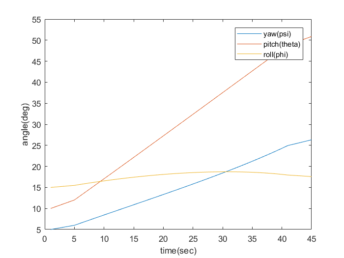

Contents
clear all;
close all;
clc;
Problem 2 Question 7
euler321_angles_initial = [5; 10; 15] * pi/180;
time_span = [0 20];
omega_iee_1 = [0; 0.25; 0.75;] *pi/180;
[t_sim, euler321_angles_sim] = ...
ode45(@(t, y)midterm_kinematics(t, y, omega_iee_1), time_span, euler321_angles_initial);
euler321_angles_degrees = euler321_angles_sim * 180/pi;
Problem 2 Question 8
load('gyrodata_p2_8_2017.mat')
euler321_angles_initial = [5; 10; 15] * pi/180;
time_span = [0 20];
omega_iee = [omega_iee(1);omega_iee(2);omega_iee(3);];;
[t_sim, euler321_angles_sim] = ...
ode45(@(t, y)midterm_kinematics(t, y, omega_iee), time_span, euler321_angles_initial);
euler321_angles_degrees = euler321_angles_sim * 180/pi;
plot(euler321_angles_degrees)
xlabel('time(sec)')
ylabel ('angle(deg)')
legend ('yaw(psi)','pitch(theta)','roll(phi)')

Problem 4
clear variables; close all; clc;
load('accel_readings.mat');
load('time_pts.mat');
t = [time_pts(1); time_pts(2); time_pts(3);];
ax = accel_readings(1);
ay = accel_readings(2);
az = accel_readings(3);
v_dot_i = @(t) [midterm_v_dot(t)*cos(midterm_psii(t)) - midterm_v(t)*midterm_psii_dot(t)*sin(midterm_psii(t));
midterm_v_dot(t)*sin(midterm_psii(t)) + midterm_psii_dot(t)*midterm_v(t)*cos(midterm_psii(t));
midterm_v(t)*midterm_gamma_dot(t)];
odefun = @(t,y) [y(4:6, :); v_dot_i(t)];
y0 = [1000 -2500 -1000 75 0 0]';
warning('off','all')
[t_sim, y_sim] = ode45(odefun, [0 60], y0);
warning('on','all')
figure();
plot(t_sim, y_sim(:, 1:3));
xlabel('time(s)')
ylabel('position(m)')
legend({'$\hat{i}$', '$\hat{j}$', '$\hat{k}$'},'Interpreter','latex')
figure();
plot(t_sim, y_sim(:, 4:6));
xlabel('time(s)')
ylabel('velocity(m/s)')
legend({'$\hat{i}$', '$\hat{j}$', '$\hat{k}$'},'Interpreter','latex')
position = y_sim(end, 1:3)'
velocity = y_sim(end, 4:6)'
v_dot =
0
Undefined function or variable 'ay'.
Error in midterm_psii>@(t,y)psii_dot(t,y,ay)
Error in odearguments (line 90)
f0 = feval(ode,t0,y0,args{:}); % ODE15I sets args{1} to yp0.
Error in ode45 (line 115)
odearguments(FcnHandlesUsed, solver_name, ode, tspan, y0, options, varargin);
Error in midterm_psii (line 2)
psii = ode45(@(t, y)psii_dot(t, y, ay), [0 60], [0 0 45*pi/180])
Error in midterm_kinematics_script>@(t)[midterm_v_dot(t)*cos(midterm_psii(t))-midterm_v(t)*midterm_psii_dot(t)*sin(midterm_psii(t));midterm_v_dot(t)*sin(midterm_psii(t))+midterm_psii_dot(t)*midterm_v(t)*cos(midterm_psii(t));midterm_v(t)*midterm_gamma_dot(t)]
Error in midterm_kinematics_script>@(t,y)[y(4:6,:);v_dot_i(t)]
Error in odearguments (line 90)
f0 = feval(ode,t0,y0,args{:}); % ODE15I sets args{1} to yp0.
Error in ode45 (line 115)
odearguments(FcnHandlesUsed, solver_name, ode, tspan, y0, options, varargin);
Error in midterm_kinematics_script (line 85)
[t_sim, y_sim] = ode45(odefun, [0 60], y0);